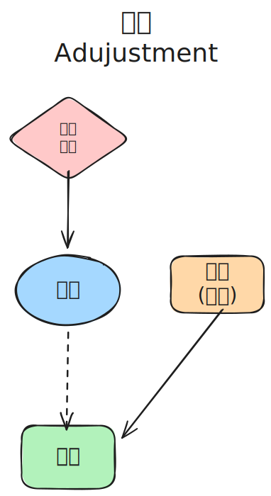
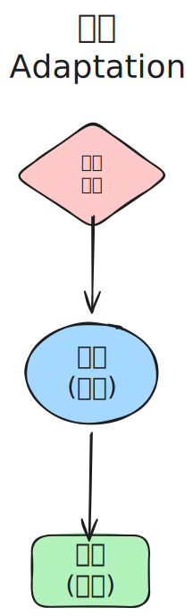
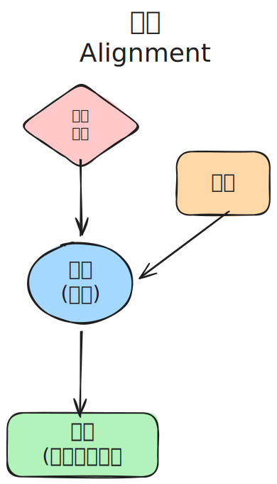
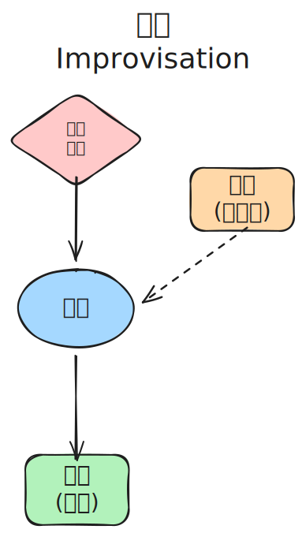
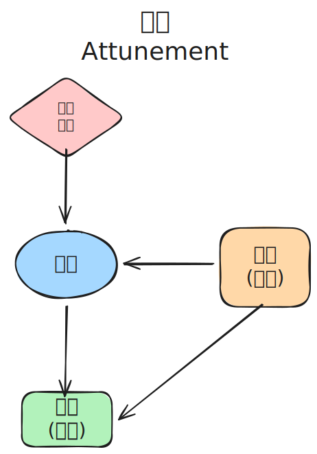

器官と位置に関しての図解
共通
調整

- 器官はそのまま
- 行動だけが書き換えられる
- 反応と行動が乖離
適応
意志が介在しない。

- 器官＝行動
- 選択の余地なし
- 生存には強いが主権はない
適合
意志が反応を正当化。

- 意志が反応側（免疫反応）につく
- 反応が「正しい行動」に昇格する
- 固着が起きやすい
即興

- 意志が制御を放棄
- 創発も暴走も起き得る
- 境界は不安定
調律
意志が「間」に留まる。

- 意志はどこも操作しない
- 反応と行動の間に「間」を作る
- 反応 ≠ 行動 が可能になる
状態
| 観点 | 調整 | 適応 | 適合 | 即興 | 調律 |
|---|---|---|---|---|---|
| 器官 | 使わない | 作動する（生理反射） | 作動する（免疫反応） | 作動する（衝動・表現） | 作動する（自己調節） |
| 意志の有無 | あり | なし | あり | あり | あり |
| 意志の位置 | 外部操作（行動・条件） | 不在 | 正当化（規範付与） | 手放し | 間に留まる |
| 反応の性質 | 反応を無視 | 自動・閉 | 自動＋固定 | 自発・開 | 感知のみ |
| 選択の有無 | 反応外で選択 | なし | 疑似的（正しさ依存） | あり | あり |
| 停止可能性 | 高い | ない | 低い | あるが選ばない | ある |
| 境界の扱い | 外部ルール | 生理的 | 規範的 | 不安定 | 構造的に保持 |
| 典型的な破綻 | 火消し依存 | 摩耗 | 排除・硬直 | 暴走 | 宙づり |
適応 : 意志なし 即興 : 意志あり（流れる）調律: 意志あり（留まる）